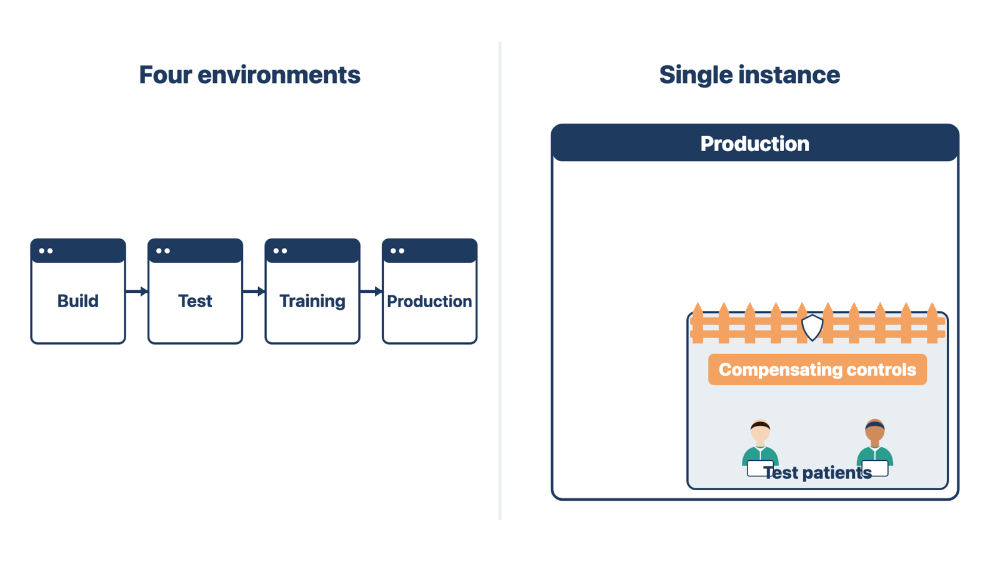

Testing and training in the live system can put fake data into real patient records, reports, and claims. You need a plan before that can happen.
An environment is a separate copy of the system. Production is the live system with real patients. A test environment is where changes are tried. A training environment is where staff practice. Some vendors also have a build environment for configuration work.
The SAFER Guides (Safety Assurance Factors for EHR Resilience) are safety self-assessment guides from the Office of the National Coordinator for Health Information Technology (ONC). The 2025 SAFER Guide on system management recommends a separate, visually distinct production environment, plus other environments for build, testing, and training. Many small vendors cannot offer this. They may give you one live instance, or one shared sandbox (a practice copy).
Do not assume the environments exist. Ask during discovery and record the answer in the environment plan. If something is missing, log it as a risk with an owner.
First ask the vendor what is possible: a temporary sandbox, a second tenant, or a demo database. If nothing is available, propose compensating controls: safeguards that reduce a risk when the usual control is missing. Examples:
The client's project owner accepts the remaining risk, with privacy and security input. You write the plan and the controls. You do not accept the risk for the client. Module 5 covers training without a separate training environment, and Module 7 covers testing.
Rule: Log a missing environment as a risk, propose controls, and let the client's owner accept what remains.

A diagram can look complete and still fail on a real case. Walking scenarios finds the steps nobody drew.
An acceptance scenario is a short, realistic case that the team walks through to prove the workflow works. For each workflow, include:
Ask each participant to explain:
Update the map and requirements until the group can complete the scenario without inventing steps.
The approved scenarios become the base for configuration demonstrations, training exercises, QC checks, and UAT. Reusing them keeps the project from testing a different workflow than the one the client approved.
Rule: Approve a workflow only after the group walks its scenarios without inventing steps.
Check yourself
An approval that no one can trace to a version and an owner is weak evidence. If a dispute comes later, the project cannot show what was agreed.
At the end of discovery, review:
Ask the accountable decision-maker to approve the future workflow or name corrections. Record the version and the date.
Rule: An approval names the accountable owner, the version, and the date.
Compare two records. One says "Operations lead said 'looks good' at the walkthrough." It does not show which version she saw. Another says "Operations lead approved map v4 in writing on October 24." The shared rule: approval is a record, not a mood.
Check yourself
A family medicine clinic bought online intake. Patients now fill out paper forms, and front-desk staff type them into the practice-management system. Scanned histories are sometimes attached to the wrong record when names are similar. Here is what the implementation specialist did.
Planned discovery by workflow. The specialist split the work into seven parts: reminder and pre-visit intake; identity check and possible duplicates; form review and missing information; signatures and consent; arrival and routing; clinical-team receipt; and exception and downtime paths. Produced: a discovery plan with sessions, participants, and decision owners. Why: each part has its own handoffs and decision owner.
Watched real work. A front-desk worker checked in two made-up patients while the specialist watched. The worker showed how she picks a record when two names are alike. Produced: observation notes with no real patient data. Why: the written procedure did not show the wrong-record risk.
Why do you think the specialist watched the front desk before meeting the practice manager about the design?
Mapped the current state. The specialist drew a swimlane map with lanes for patient, front desk, and nurse. It showed the re-entry step, the scan step, and three exceptions: similar names, an unsigned form, and downtime. Produced: a current-state map the front desk and manager validated. Why: the design needed a shared picture of today.
Separated policy from habit. Staff said every insurance card "must" be photocopied. The specialist recorded the step as unconfirmed and asked the billing lead for its source. Produced: an entry in the decision record with an owner and date. Why: the source decides whether the step stays.
Wrote a requirement with evidence. "At check-in, the system requires the approved patient-identification steps before the visit proceeds. The clinic's patient-identification authority approves the steps. UAT tests a correct match, a likely duplicate, and a mismatch." Produced: requirement INT-04, traced to the purchased intake outcome. Why: it can be built, tested, and approved.
Why do you think the requirement names three UAT cases instead of just "test check-in"?
Asked about accessibility. The compliance lead confirmed WCAG 2.1 Level AA as the target. The vendor's ACR showed "Partially Supports" for custom forms. Produced: an accessibility entry with a plan to test the configured intake form. Why: the ACR covers the product, not the clinic's own form.
Designed the future state. Approved intake answers fill the right fields, so re-entry stops. Automated matching alone is not enough; staff must confirm the match by the approved steps. The specialist classed "stop re-entry" as a necessary simplification. Produced: future-state map v1. Why: the change removes a failed handoff, while the human check keeps patient safety.
Why do you think the design did not let automated matching decide the patient's record on its own?
Walked scenarios. The group walked two people with similar names, a returning patient with changed information, an unsigned form, and system downtime. The downtime case showed no paper backup form, so the map was updated. Produced: map v2 and five acceptance scenarios. Why: the scenarios found a missing step before the build.
Got approval and handed off. The operations lead approved map v2 in writing, with the date. The specialist wrote the solution blueprint and build inventory, each item traced to a requirement. Produced: a versioned approval and a build handoff. Why: builders work only from approved, traced requirements.
If you have done this task on a real project, try this first, then compare with the worked example.
A small cardiology practice bought an EHR with a lab interface. Its workflow to redesign is "test result to review, communication, and closure." Today, results arrive by fax, and a nurse files them in a paper tray.
Planned discovery by workflow. The specialist planned sessions for result arrival, provider review, patient communication, and closure. Produced: a discovery plan with the nurse lead, two cardiologists, and the practice manager as decision owner for workflow. Why: the workflow crosses roles from arrival to closure.
Watched real work. The nurse showed how she sorts faxed results and flags abnormal ones with a sticky note. Produced: observation notes with no real patient data. Why: the paper tray hides results that nobody has reviewed.
Mapped the current state. Produced: a swimlane map with lanes for lab, nurse, cardiologist, and patient. One exception: a result for a patient with no scheduled follow-up. Why: the group needed a shared picture before design.
Asked for the exceptions. List three more exception questions to ask: __________.
Wrote a requirement with evidence. Write one requirement for abnormal results: __________.
Classified a proposed change. A cardiologist wants to add a patient-facing results video library before go-live. Class and reason: __________.
Walked scenarios. List four scenarios to walk: __________.
Got approval. What must the approval record show? __________.